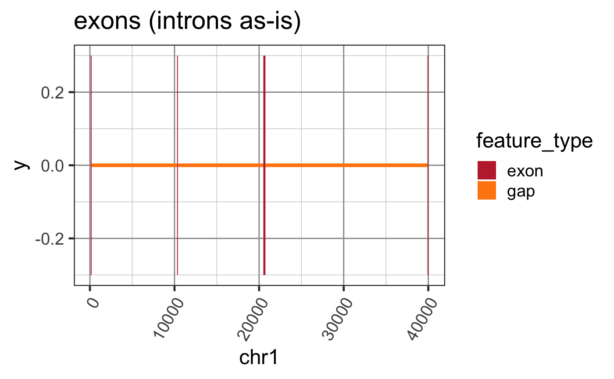
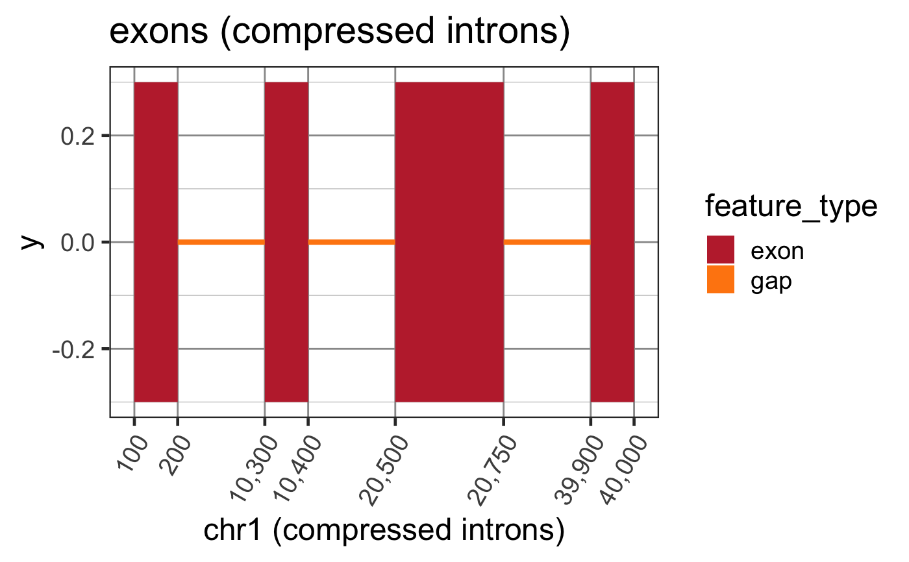

Create a ref2compressed function to compress GR gaps
make_ref2compressed(gr, gapWidth = 200, keepValues = FALSE, upstream = 50000, upstreamGapWidth = gapWidth * 3, downstream = 50000, downstreamGapWidth = gapWidth * 3, nBreaks = 7, verbose = FALSE, ...)
| gr | GRanges object containing regions not to compress. Regions which are unstranded gaps are compressed to fixed width. |
|---|---|
| gapWidth | integer value used for fixed gap width, or when NULL the gap width is defined as 3 times the median feature width. |
| keepValues | logical indicating whether to keep feature values in the GRanges data. |
| upstream, downstream, upstreamGapWidth, downstreamGapWidth | used to define the compression of coordinates upstream and downstream the supplied GRanges. In reality, the upstream range and upstream gap width defines a multiplier, and all upstream coordinates are compressed through zero. Similarly, all downstream coordinates are compressed to 10 billion, which is roughly 3 times the size of the human genome. |
| nBreaks | the default number of x-axis coordinate breaks used in ggplot labeling. |
| verbose | logical indicating whether to print verbose output. |
| ... | additional arguments are ignored. |
list with trans_grc which is class "trans" suitable
for use in ggplot2 functions; transform a function that converts
chromosome coordinates to compressed coordinates; inverse a function
that converts compressed coordinates to chromosome coordinates;
scale_x_grc a function used similar to ggplot2::scale_x_continuous()
during ggplot2 creation; gr a function that compresses coordinates
in a GRanges object; grl a function that compresses coordinates in
a GRangesList object. Attributes "lookupCoordDF" is a two-column
data.frame with chromosome coordinates and compressed coordinates,
which is used to create the other transformation functions via
stats::approx(); "gapWidth" the gap width used, since it can
be programmatically defined; "gr" the GRanges input data used
to train the transformation.
This function takes a set of GRanges which are to be maintained with fixed aspect ratio, and it defines a function to compress coordinates of the gaps between GRanges features.
grl2df(), test_junc_wide_gr
Other jam GRanges functions: addGRLgaps,
addGRgaps,
annotateGRLfromGRL,
annotateGRfromGR,
assignGRLexonNames,
closestExonToJunctions,
combineGRcoverage,
exoncov2polygon,
findOverlapsGRL,
getFirstStrandedFromGRL,
getGRLgaps,
getGRcoverageFromBw,
getGRgaps, grl2df,
sortGRL, spliceGR2junctionDF,
stackJunctions
Other splicejam core functions: exoncov2polygon,
gene2gg, grl2df,
plotSashimi, prepareSashimi
Other jam RNA-seq functions: assignGRLexonNames,
closestExonToJunctions,
combineGRcoverage,
defineDetectedTx,
detectedTxInfo,
exoncov2polygon,
flattenExonsBy,
groups2contrasts,
makeTx2geneFromGtf,
runDiffSplice, sortSamples,
spliceGR2junctionDF
suppressPackageStartupMessages(library(GenomicRanges)); suppressPackageStartupMessages(library(ggplot2)); data(test_exon_wide_gr); # To plot a simple GRanges object widedf <- grl2df(test_exon_wide_gr); ggWide <- ggplot(widedf, aes(x=x, y=y, group=id, fill=feature_type)) + geom_polygon() + colorjam::theme_jam() + colorjam::scale_fill_jam() + xlab("chr1") + ggtitle("exons (introns as-is)") print(ggWide);# Now compress the introns keeping axis labels ref2c <- make_ref2compressed(test_exon_wide_gr, nBreaks=10); ggWide2 <- ggWide + scale_x_continuous(trans=ref2c$trans_grc) + xlab("chr1 (compressed introns)") + ggtitle("exons (compressed introns)") print(ggWide2);